intel core i9
.jpg)
mayormente usado para computadoras de oficina son buenos procesadores pero a compararlos con los de AMD les falta potencia para soportar la demanda de los componentes en una computadora hecha pieza por pieza
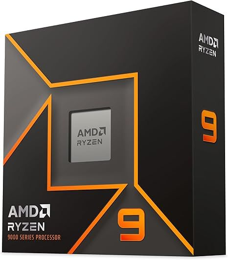
procesador muy famoso y recomendado por muchos en la mayoria de computadores construidos paste por parte de muchos profecionales o youtubers de computadoras
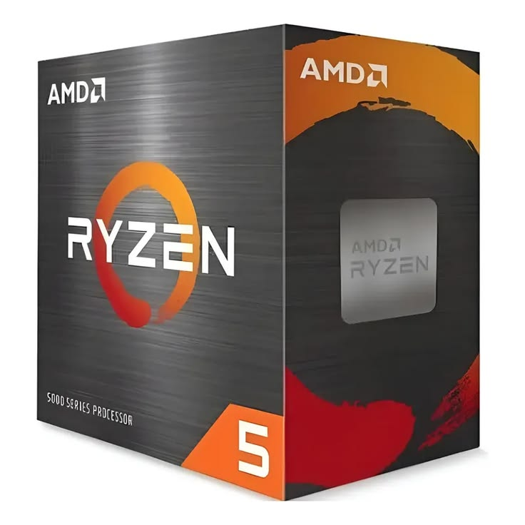
otro procesador muy famoso en la construccion de un computador gran porcentaje de las computadoras construidas a parte o ya construidas para jugar tambien conocidas como "gamer pc's"
mayormente usado para computadoras de oficina son buenos procesadores pero a compararlos con los de AMD les falta potencia para soportar la demanda de los componentes en una computadora hecha pieza por pieza
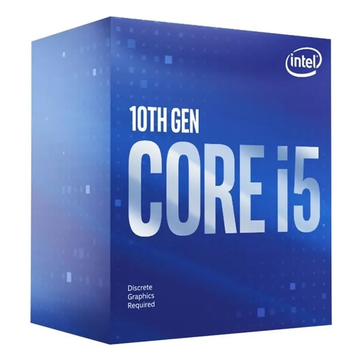
otro procesador muy utilizado en computadoras para oficinas siendo menos potente que el i9 pero mas barato para su compra

un motherboard de gama alta muy amado por la comunidad creadora de computadoras gracias a si capacidad para odtener 4 ranuras para memoria ram y soportar cpu's de alta potencia
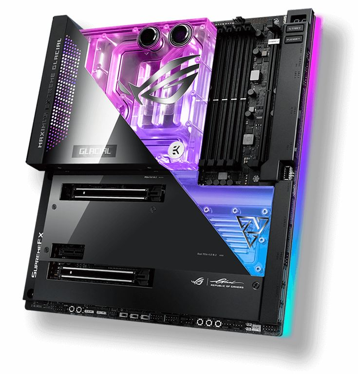
una placamadre diseñada para mantener tu computador al maximo rendimiento en todos momentos gracias a su refrigeracion liquida personalizada siendo muy recomendada a la hora de crear un computador con refrigeracion liquida
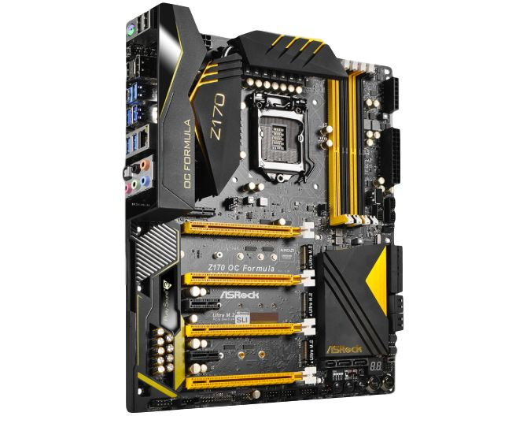
otra placamadre para los entusiastas de mantener las mejores configuraciones y un funcionamiento rapido de el computador aun teniendo el computador a maximo rendimiento pero esta necesita ventiladores en su carcasa en vez de enfriamiento liquido
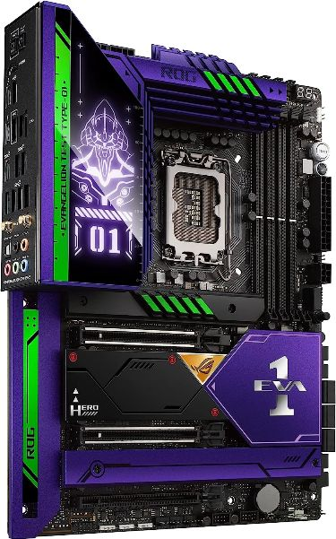
esta placamadre es una de alta potencia para computadores y una de las mas modernas ya que tiene animaciones y una pequeña pantalla led con animaciones al usar el computador en altas potencias o en uso rutinario
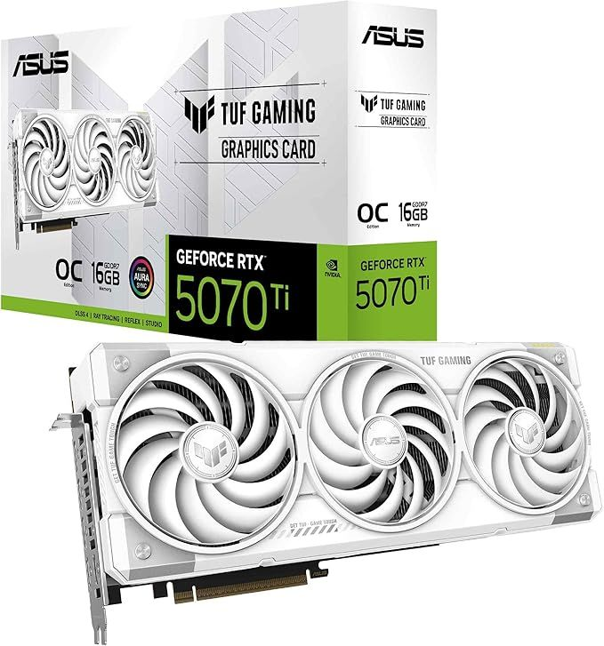
una tarjeta grafica con alta gama de potencia para alto rendimiento y muchas horas de uso sin necesidad de preocuparte por tener una resolucion y rendimiento bajo este tipo de cartas se ven beneficiadas por tener un cpu y gpu de alta gama al igual que la carta
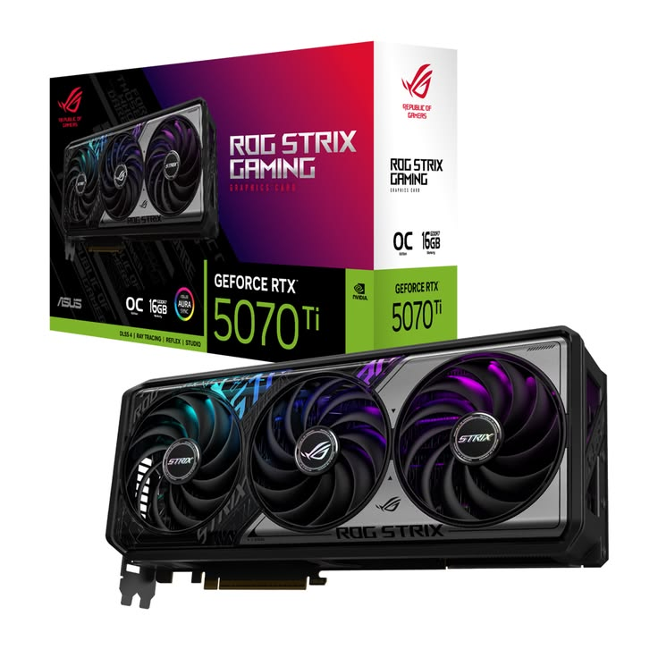
una de las tarjetas graficas mas grandes de el mercado con alta potencia de rendimiento en cualquier actividad ya sea diaria como trabajo de oficina,creacion de paginas o juegos e incluso para una remplaso para tu computador de casa gracias a su alta potencia
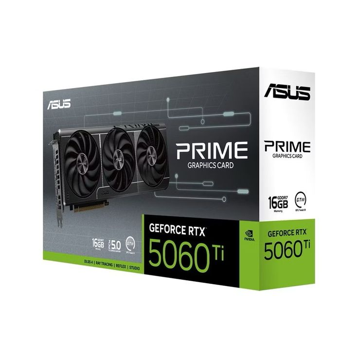
componente de gama media-alta muy buscada por su bajo precio y alto rendimiento usualmente la mas comprada gracias a su disponibilidad y usualmete renplasada 1 o 2 años despues de su uso y mejorada
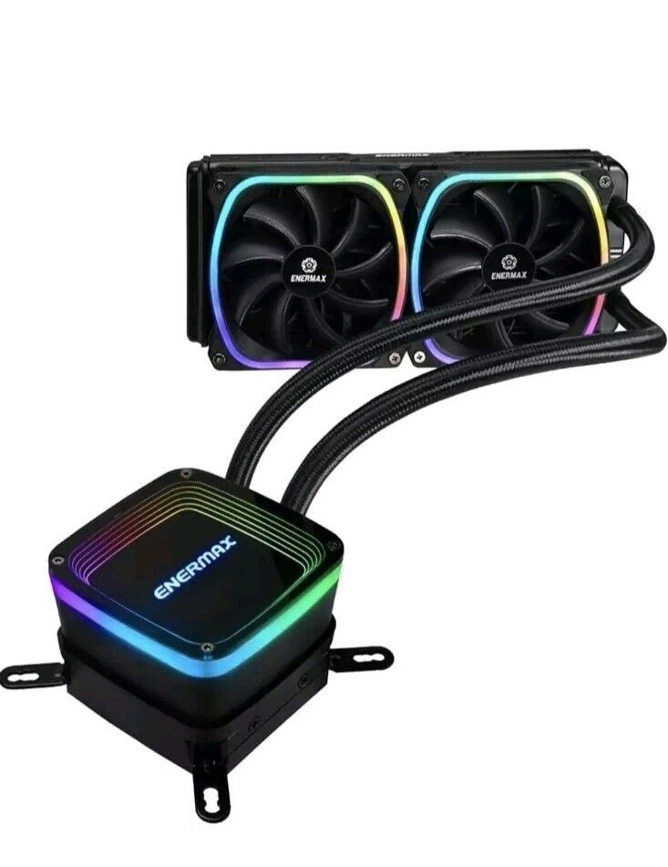
es un sistema de enfriamiento liquido siendo de los mas eficazes y mas famosos al momento de crear o armar un computador pieza a pieza

es un sistema de enfriamiento liquido que muchos usan gracias a su bajo precio tamaño pequeño y alta potencia usualmente llegando a los 80 grados despues de altas horas de uso
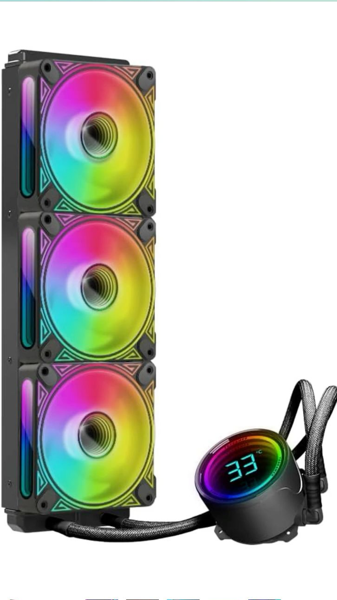
este tipo de procesador es muy famoso gracias a su pequeña pantalla que nos dice cuanto esta la temperatura de nuestro procesador y gracias a sus colores llamativos
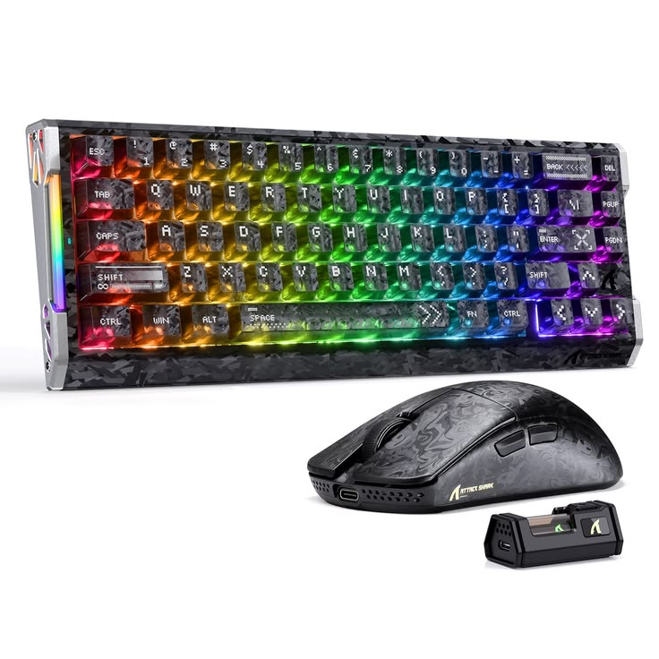
conjunto de mouse y teclado inalambrico usado por muchos gracias a su comodidad, su combinacion de colores y su diseño
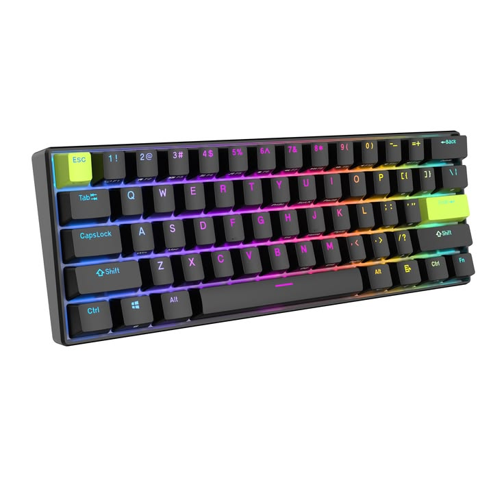
muy buscado por la facil personalizacion de sus teclas tambien es muy usado por la comodidad y el poco espacio que ocupa en el escritorio
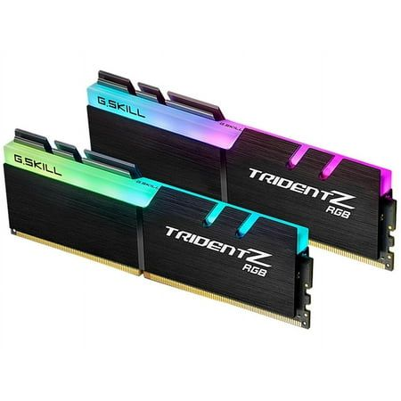
uno de los muchos tipos de ram mas buscados para una mejora comtenporanea a una mejor tarjeta grafica o placa madre
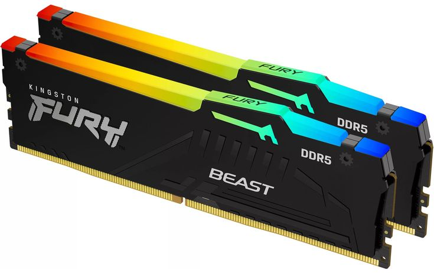
los stick de memoria ram mas buscados y utilizados en el mercado siendo costosos pero siendo de los mejores en desenpeño en cualquier juego o aplicacion de alta demanda de RAM
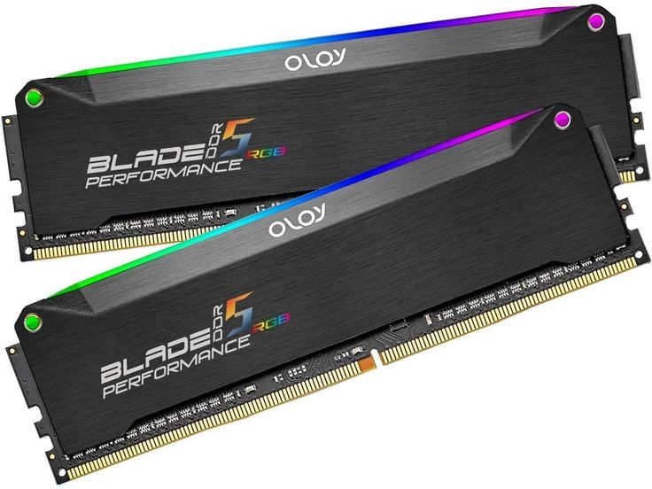
este es otra marca de ram muy buscada gracis a su diversidad de capasidad siendo facil de encontrar incluso 16GB hasta 64GB
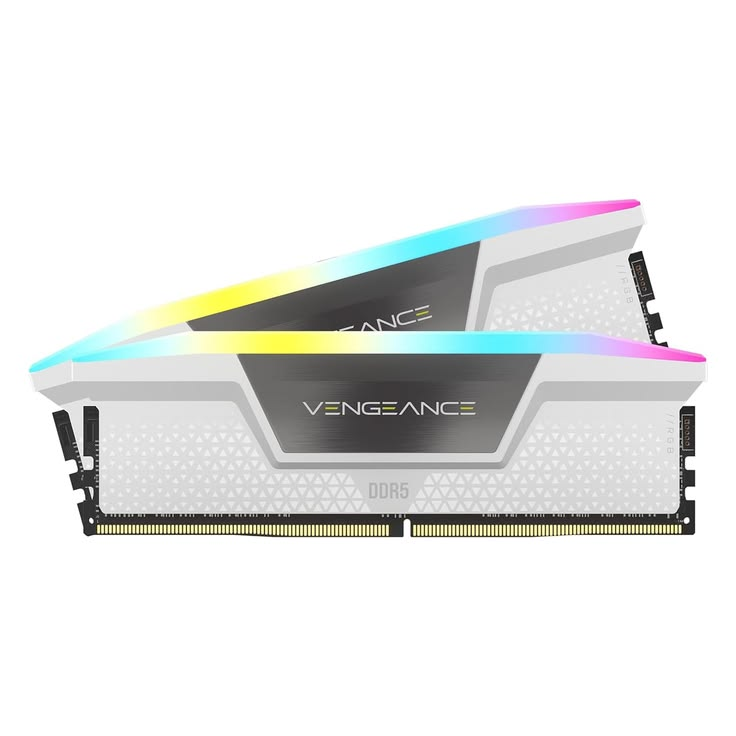
una de las memorias ram mas versatiles y mas accesibles en el mercado gracias a su equilibrio entre precio rendimiento y compatibilidad con muchas placas madre